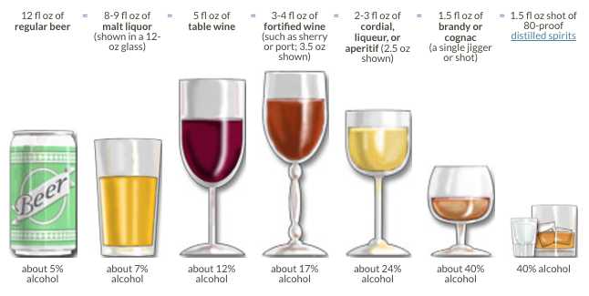

Using the Widmark Forumla, we will estimate your blood alcohol content. For maximum accuracy, please enter the exact quantities consumed. If you are unsure, you may use the default values or enter your best guess.
Please use the following chart to estimate the quantity of standard drinks consumed, each representing a single standard drink:
